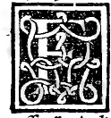

CAPITEL V¶
Es folgt, von der Länge und Dicke besagter Säulen zu sprechen.

Besagte runde Säulen werden beliebig hoch gemacht: ihre Höhe theilt sich in sechs gleiche Theile, und bisweilen in acht und sieben, wie ihr weiter unten verstehen werdet, und der eine ist Durchmesser ihrer untern Verjüngung, nämlich ef, welche Verjüngung um so grösser sein muss als die obere, um wie viel der Vorsprung des Trochilus an der obern beträgt, d. h. dass die Verjüngung unterhalb ohne ihren Trochilus ebenso gross sein muss, wie die obere, mit besagtem Trochilus, um dem Gewicht zu widerstehen. Von jener Verjüngung bis zum dritten Theil ihrer Höhe wächst sie allmählich in ähnlicher Art wie der menschliche Körper, und für ein ferneres Drittel wird diese Dicke beibehalten.
Und dann nimmt sie beim letzten Drittel bis zur höchsten Spitze immer ab, indem sie dort in der obern Verjüngung/tp endet. Jene letzte Abstufung unmittelbar über ij 1/3l. die betreffende Figur am Ende des Tractuts. Statt des keinen Sinn gebenden Ausdru;ks: „immedietate” wohl.immeiiate” zu lesen. der Verengung, dort sagten die Alten Schaft und mitunter Trochilus, und das darüber zwischen ihm und dem Capitell wird oberer Säulenpolster genannt.
Ihre Basis muss die Hälfte des Durchmessers ihres untern Trochilus, d. h. von ef hoch sein, welche Basis aus mehr Abstufungen zusammengesetzt ist, wovon die erste ah von den Alten Plinthe und von unsern Zeitgenossen Platte genannt wird, die mit dem ganzen Vorsprung oder Projectur ein und eine halbe Dicke der Säule lang sein muss und ein Sechstel der Dicke hoch sein muss. Das, was unmittelbar darauf gesetzt wird, nämlich cd, heisst unteres Polster der Basis, oder Stock nach Einigen. Das andere engere darauf heisst Quader.
Und den anderen hohlen Theil, zwischen den zwei Quadern, diesen nennt man Scotica von den Unsern Reifen oder Stäbe (genannt), und über seiner Quader befindet sich das obere Polster der Basis, nämlich ef, derart, dass besagte Basis aus einer Plinthe, zwei Polstern, zwei Quadern und einer Scotica, oder Reifen oder Stäben besteht.
Und alle genannten Abstufungen zusammen werden Basis der Säule genannt, wovon mit Ausnahme der Plinthe der Rest ein Drittel der Dicke besagter Säule beträgt, von der besagte Plinthe ein Sechstel ausmacht, wie wir vorher gesagt, welche Theile oder Glieder ihr stets zu allen übrigen mit ihrem Ebenmass proportioniren könnt, wie bezüglich des menschlichen Körpers oben gesagt wurde, die euch sämmtlich vermittelst Zahlen bekannt sein werden und es auch noch bei irrationalen sein werden, die sich durch Zahlen und ihre Theile weder ausdrücken noch angeben lassen, wie der des Quadratdurchmessers i) zu seiner Seite. Und unser Vitruv nennt sie in dieser Zusammensetzung Spira und wir Basis.
Nimmt man von dieser Basis oder Spira die Plinthe oder Platte fort, so theilt sich das ganze Obere in vier gleiche Theile, aus dem einen wird das obere Polster, und die drei übrigen theilen sich in zwei gleiche Theile, wovon der eine das untere Polster cd, der andere die Scotica /, mit ihren Quadern, von den Griechen Trochilus genannt, bildet. Abgesehen davon, dass Trochilus noch manchmal jene letzte der beiden untern und obern Verjüngungen der Säule, nämlich kp genannt wird. Und hier beschliessen wir zu eurer Genüge hinsichtlich besagter runder Säule, und werden ferner von ihrem Pilaster oder Stilobaten sagen, wie er gemacht werden müsse.